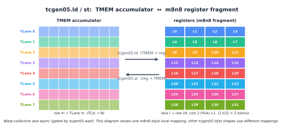
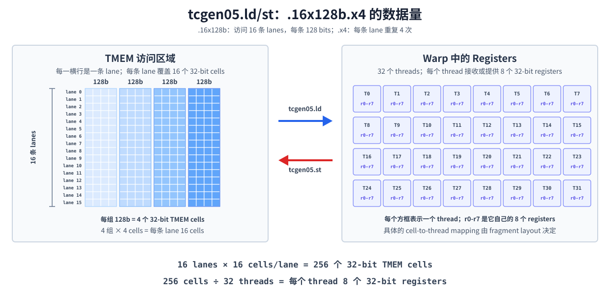

Tensor Memory（TMEM）#
概览
TMEM 是由 Lane 和 Column 组成的二维地址空间，并以 column 为单位动态分配。
tcgen05.alloc申请空间，tcgen05.dealloc释放空间，tcgen05.relinquish_alloc_permit放弃后续分配权限。tcgen05.ld和tcgen05.st由整个 warp 协同执行。warp 在 warpgroup 中的 ID 决定它能访问哪 32 个 TMEM Lane 位置，.shape和.num决定一次移动的数据量以及每个 thread 使用的 registers 数量。TMEM load 和 store 都是异步操作。使用 load 得到的 registers 前需要执行
tcgen05.wait::ld；复用 store 涉及的 TMEM 位置前需要执行tcgen05.wait::st。
前几章已经从不同角度介绍过 TMEM。数据布局及其记号 解释了 TLane、TCol 和二维 layout；Tensor Core 数据布局的演进 介绍了 accumulator 与 scale factors 的数据路径；Blackwell Tensor Core 则说明了 tcgen05.mma 如何把结果映射到 TMEM。
先用下图回顾 TMEM 的物理结构。PTX 将它的两个地址坐标称为 Lane 和 Column；在 TIRx layout 记号中，对应的轴写作 TLane 和 TCol。这里的 TMEM Lane 是地址坐标，不是 thread 的 lane ID。
每个 CTA 的 TMEM 在 Lane 维上有 128 个位置，在 Column 维上最多有 512 个位置，每个 (Lane, Column) cell 为 32 bits。后面所说的分配 TMEM，就是从 Column 维中申请一段空间；每个被分配的 column 都包含全部 128 个 Lane 位置。

本章把重点放在使用 TMEM 时还需要处理的两个问题：kernel 如何申请和释放 TMEM，以及各个 warp 如何通过 tcgen05.ld 和 tcgen05.st 访问它。
TMEM 的分配生命周期#
TMEM 采用动态分配。tcgen05.alloc 沿 Column 维申请空间，可用的 n_cols 为 32、64、128、256 或 512；每次申请一个 column 时，该 column 中全部 128 个 Lane 位置会一起分配。
下面是后续 TIRx kernel 中常见的写法：
pool = T.SMEMPool()
tmem_addr = pool.alloc((1,), "uint32")
pool.commit()
if warp_id == 0:
T.ptx.tcgen05.alloc(
T.address_of(tmem_addr), n_cols=256, cta_group=1
)
tmem_addr 是 SMEM 中的一个 32-bit slot。tcgen05.alloc 成功后，会把分配到的 TMEM base address 写进这个 slot。指令本身可能等待空闲的 TMEM columns，因此它是一条 blocking instruction。
这里的 warp_id == 0 选择的是整个 warp 0。tcgen05.alloc 是 warp-collective instruction，warp 中的 32 个 threads 必须使用相同的 n_cols 一起执行；不能再套一层 lane_id == 0，把它变成单 thread 操作。其他 warps 在读取 tmem_addr 前，还需要经过相应的 fence 和 CTA synchronization，使分配结果对整个 CTA 可见。
拿到 base address 后，TIRx 会在这段已分配的空间上声明一个 TMEM buffer：
tmem = T.decl_buffer(
(128, 256),
"float32",
scope="tmem",
allocated_addr=tmem_addr[0],
layout=TileLayout(
S[(128, 256) : (1@TLane, 1@TCol)]
),
)
allocated_addr 将 buffer 绑定到 tcgen05.alloc 返回的地址，layout 则规定逻辑坐标 (m,n) 如何映射到 TMEM 的 TLane 和 TCol。这样，后续代码可以通过 tmem[m,n] 表示逻辑元素，具体的 TMEM 坐标由 layout 统一处理。
分配大小的限制#
同一个 CTA 按执行顺序进行多次分配时，后一次申请的 columns 数量不能比前一次更多。例如：
256 columns -> 128 columns 合法
128 columns -> 256 columns 不合法
这个规则要求 kernel 在设计阶段先确定最大的 TMEM 需求，而不是运行到后面再扩大分配。
使用结束后，kernel 要完成两件事：
if warp_id == 0:
T.ptx.tcgen05.dealloc(tmem_addr[0], n_cols=256, cta_group=1)
T.ptx.tcgen05.relinquish_alloc_permit(cta_group=1)
tcgen05.dealloc 释放之前申请的 columns；kernel 退出前，所有已分配的 TMEM 都必须显式释放。tcgen05.relinquish_alloc_permit 表示当前 CTA 放弃后续分配 TMEM 的权利，执行之后不能再调用 tcgen05.alloc。清理阶段开始前，还要确认 MMA、load 和 store 等访问 TMEM 的异步操作已经完成。
cta_group::2 的分配#
cta_group::1 只涉及当前 CTA，因此由当前 CTA 中的一个 warp 完成分配和释放。cta_group::2 则需要 CTA pair 两侧各有一个 warp 执行同一条 tcgen05.alloc 或 tcgen05.dealloc；先到达的一侧可能会等待 peer CTA 的 warp。
这也意味着 peer CTA 必须已经启动，并最终参与这些 collective operations。一个 kernel 中所有带 cta_group qualifier 的 tcgen05 指令还必须使用相同的值，不能用 cta_group::2 分配 TMEM，却用 cta_group::1 的 tcgen05.mma 或 tcgen05.commit 访问它。
每个 warp 能访问哪些 TMEM lanes#
TMEM 属于 CTA，但 tcgen05.ld 和 tcgen05.st 不会让 CTA 中的任意 warp 访问全部 128 个 Lane 位置。一个 warpgroup 中的四个 warps 各自负责一个由 32 个 Lane 位置组成的固定范围：
warp 在 warpgroup 中的 ID |
可访问的 TMEM Lane 位置 |
|---|---|
0 |
0-31 |
1 |
32-63 |
2 |
64-95 |
3 |
96-127 |
四个 warps 都可以访问所有 TMEM columns，区别只在 Lane 范围。因此，完整读出一个覆盖 128 个 Lane 位置的 accumulator 时，需要四个 warps 分别读取自己的 Lane 范围。前面章节提到的“warpgroup 读回 TMEM”，具体指的就是这四次 warp-level access。
tcgen05.ld 和 tcgen05.st 如何移动数据#
tcgen05.ld 从 TMEM 加载数据到 registers，tcgen05.st 处理相反方向。两条指令都是 warp-collective operations：warp 中所有 threads 必须执行同一条指令，并提供相同的 TMEM 地址操作数 [taddr]。硬件再根据 thread 的 lane ID，将整个访问结果分配到各 thread 的 registers，或把这些 registers 写回对应的 TMEM cells。
下图使用一个 m8n8-style register fragment 展示两个方向的数据移动。它只是 tcgen05.ld/st 支持的一种局部映射；实际的数据移动方式由 .shape、.num 以及可选的 .pack::16b 或 .unpack::16b qualifier 决定。

Shape 和 Repeat Factor#
一次 load 或 store 移动多少数据，由 .shape 和 .num 两部分共同决定。.shape 指定一次覆盖多少条 TMEM lanes，以及每条 lane 的基础数据量；.num 再将这份数据量重复若干次。例如：
tcgen05.ld.sync.aligned.16x128b.x4.b32
{r0, r1, r2, r3, r4, r5, r6, r7}, [taddr]
下图从左到右展开这条指令。左侧每一横行对应一条 TMEM lane。每行有四个蓝色色块，对应 .x4 的四次重复；每个色块包含 4 个小格，也就是 .16x128b 中的 128 bits。一个小格表示一个 32-bit TMEM cell。

因此，左侧一共有：
16 lanes × 4 groups/lane × 4 cells/group
= 256 个 32-bit TMEM cells
右侧的 32 个方框分别表示 warp 中的 32 个 threads。每个方框中的 r0-r7 表示该 thread 自己的 8 个 32-bit registers。tcgen05.ld 将左侧的 256 个 cells 分配到这些 registers，因此每个 thread 得到：
256 cells ÷ 32 threads = 8 个 32-bit registers/thread
tcgen05.st 沿相反方向移动相同数量的数据。这张图只计算数据量；每个 TMEM cell 具体对应哪个 thread 的哪个 register slot，仍由指令的 fragment mapping 决定。
如果把 .x4 改成 .x1，左侧每条 lane 就只剩一个 128-bit 色块。此时总共有 16×1×4=64 个 cells，平均到 32 个 threads 后，每个 thread 得到 2 个 32-bit registers。
指令形式 |
每条 lane 的数据量 |
每个 thread 的 registers |
|---|---|---|
|
128 bits |
2 |
|
256 bits |
4 |
|
512 bits |
8 |
|
1024 bits |
16 |
这和 MMA 的 M×N×K instruction shape 是两套概念。MMA shape 描述矩阵乘法的逻辑尺寸；这里的 data-movement shape 描述 TMEM 与 registers 之间一次搬运的硬件模式。Tensor Core 数据布局的演进 中的 register fragment，则说明这些 registers 如何对应回逻辑矩阵元素。
16-bit 数据的打包与拆包#
TMEM 的每个 cell 和 tcgen05.ld/st 的 register operand 都是 32 bits，但 kernel 处理的数据片段可能只有 16 bits。执行 tcgen05.ld 时，.pack::16b 会把相邻 TMEM columns 中的两个 16-bit 数据片段打包进一个 32-bit register；执行 tcgen05.st 时，.unpack::16b 则将一个 32-bit register 拆成两个 16-bit 数据片段，写入相邻的 TMEM columns。
Pack 和 unpack 只改变 TMEM 与 registers 之间的数据组织方式，不改变 TMEM 的分配单位：TMEM 仍然沿 Column 维分配，每个被分配的 column 仍然包含全部 128 个 Lane 位置。
等待异步读写完成#
tcgen05.ld 和 tcgen05.st 都是异步指令。执行 load 后，必须在使用目标 registers 前执行 tcgen05.wait::ld；执行 store 后，则通过 tcgen05.wait::st 等待写入完成。二者分别等待当前 thread 此前发出的所有 tcgen05.ld 或 tcgen05.st 操作。
如果数据还要交给其他 threads 或 warps，除了等待异步操作完成，还需要配合 thread synchronization 和对应的 tcgen05.fence 建立跨 thread 的执行顺序。
SMEM 到 TMEM 的 tcgen05.cp 使用另一套 shape 和完成机制。它如何搬运 block-scaled MMA 的 scale factors，已经在 Tensor Core 数据布局的演进 和 Blackwell Tensor Core 中介绍，这里不再重复。
阅读一个使用 TMEM 的 kernel 时，可以依次检查四件事：申请和释放了多少 columns、当前 warp 能访问哪些 Lane 位置、ld/st 的 .shape 和 .num 会产生多少 registers，以及相关异步操作是否已经完成。这样可以把 TMEM 的资源生命周期、数据布局和同步关系串联起来。